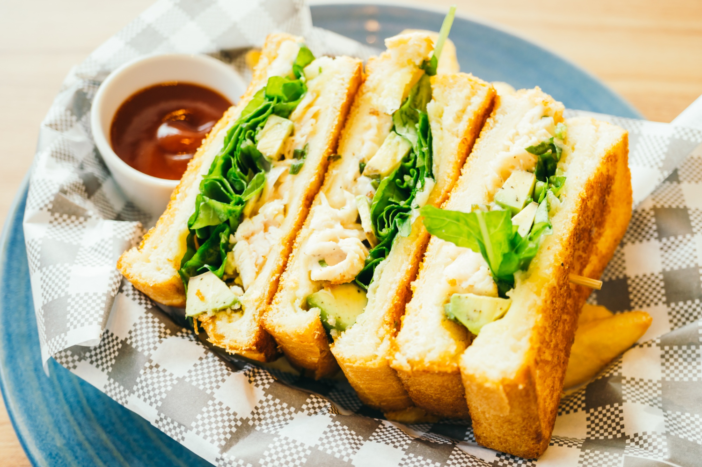

Home
Egg Tamata

Description
One imagines that cooking a fluffy eggs for an egg sandwich is quite tiresome and a long process, but with the help of science it can be done in mere minutes.
A recipe which usually takes 20 minutes to prepare now can be done in 10, so lets get started
Ingredients
Serving 1
- Eggs 2
- Corn Flour
- Oil/Butter
- Bread
- Mayonnaise
Steps
- Whisk your eggs with 1tbsp oil, 1tsp cornstarch and salt to taste
- Put your frying pan on medium high and spray a little oil on it
- After the oil heats up pour your egg mixture
- Mix Constantly till your egg forms waves and is fluffed up
- Use a spatula to give it the shape you want and take it off the heat
- Toast the inside of your buns and apply Mayonnaise
- Now put together your sandwich